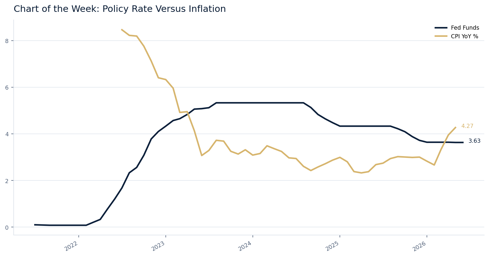

|
Wolf Research
Weekly Market Brief
Friday, 10 July 2026 | 9:00am SGT
Internal Office Distribution
|
|
At a Glance
Executive Snapshot
|
Macro
Policy path remains central.
Discount-rate sensitivity stays in focus.
|
FX
1W: USD/SGD moved +0.04% as rates, USD direction, and regional data shaped short-term positioning. 1M: the +0.33% move reflects accumulated central-bank repricing and growth differentials. YTD: the +2.02% direction remains tied to policy-rate differentials, inflation data, and Singapore-dollar translation exposure.
Monitor translation and hedging risk.
|
Commodities
1W: Brent moved +0.33% with near-term supply headlines, USD moves, and macro data affecting positioning. 1M: the +1.07% move reflects inventory, demand expectations, real-yield pressure, and China/global growth signals. YTD: the +2.67% direction remains linked to supply restraint, inflation sensitivity, and airline margins, utilities, and inflation sensitivity.
Watch inflation and margin channels.
|
| |
|
Private Markets
Exit timing remains selective.
Liquidity and valuations remain key.
|
Watchlist
Inflation and Fed communication
Potential cross-asset catalyst.
|
Portfolio
8 key holdings monitored.
Headlines ranked by exposure relevance.
|
|
|
Portfolio Lens
Portfolio Snapshot
|
Total Equity Portfolio Value
USD 171.6m
|
Total YTD Equity P&L
+USD 30.6m
|
Best Contributor
Meta Wolf AG
|
| |
|
Worst Contributor
Bayerische Motoren Werke AG
|
Largest Sector Exposure
Capital Goods
|
Largest Currency Exposure
EUR
|
| Holding |
Currency |
Sector |
Current Value |
YTD P&L |
YTD % |
| Meta Wolf AG |
EUR |
Capital Goods |
USD 127.1m |
+USD 28.9m |
+29.48% |
| Softtech Engineers Ltd |
INR |
Software & Services |
USD 15.0m |
+USD 3.6m |
+31.48% |
| Bayerische Motoren Werke AG |
EUR |
Automobiles & Components |
USD 10.0m |
-USD 1.9m |
-15.78% |
| SAA Software |
EUR |
Invalid / Private Security |
USD 3.4m |
-USD 53.7k |
-1.54% |
| Singapore Airlines Ltd |
SGD |
Transportation |
USD 2.2m |
+USD 220.1k |
+11.12% |
| RWE AG |
EUR |
Utilities |
USD 1.9m |
-USD 33.4k |
-1.72% |
| Sanofi SA |
EUR |
Pharmaceuticals, Biotechnology |
USD 1.9m |
-USD 192.0k |
-9.37% |
| Ping An Insurance Group Co of |
HKD |
Insurance |
USD 1.8m |
-USD 182.8k |
-9.15% |
|
|
Equity Book
Equity Holdings Monitor
Equity exposure is concentrated in Capital Goods and EUR-denominated holdings. YTD contribution is led by Meta Wolf AG, while Bayerische Motoren Werke AG is the largest detractor.
Top Equity Contributors
| Holding | Sector | Currency | Current Value | YTD P&L | YTD % |
|---|
| Meta Wolf AG | Capital Goods | EUR | USD 127.1m | +USD 28.9m | +29.48% |
| Softtech Engineers Ltd | Software & Services | INR | USD 15.0m | +USD 3.6m | +31.48% |
| ING Groep NV | Banks | USD | USD 1.3m | +USD 264.5k | +26.77% |
| Singapore Airlines Ltd | Transportation | SGD | USD 2.2m | +USD 220.1k | +11.12% |
| SATS Ltd | Transportation | SGD | USD 968.2k | +USD 138.3k | +16.66% |
Top Equity Detractors
| Holding | Sector | Currency | Current Value | YTD P&L | YTD % |
|---|
| Bayerische Motoren Werke AG | Automobiles & Components | EUR | USD 10.0m | -USD 1.9m | -15.78% |
| CapitaLand Investment Ltd/Sing | Real Estate Management & Development | SGD | USD 1.5m | -USD 203.5k | -12.25% |
| Sanofi SA | Pharmaceuticals, Biotechnology | EUR | USD 1.9m | -USD 192.0k | -9.37% |
| Ping An Insurance Group Co of | Insurance | HKD | USD 1.8m | -USD 182.8k | -9.15% |
| Alibaba Group Holding Ltd | Consumer Discretionary Distribution | HKD | USD 812.3k | -USD 124.4k | -13.28% |
Sector Exposure
| Sector | Current Value | Weight | YTD P&L |
|---|
| Capital Goods | USD 127.1m | 74% | +USD 28.9m |
| Software & Services | USD 15.0m | 9% | +USD 3.6m |
| Automobiles & Components | USD 10.0m | 6% | -USD 1.9m |
| Invalid / Private Security | USD 3.5m | 2% | -USD 54.4k |
| Transportation | USD 3.2m | 2% | +USD 358.4k |
| Insurance | USD 2.9m | 2% | -USD 92.6k |
| Utilities | USD 2.8m | 2% | +USD 50.0k |
| Pharmaceuticals, Biotechnology | USD 1.9m | 1% | -USD 192.0k |
Currency Exposure
| Currency | Current Value | Weight | YTD P&L |
|---|
| EUR | USD 145.4m | 85% | +USD 26.9m |
| INR | USD 15.0m | 9% | +USD 3.6m |
| SGD | USD 7.3m | 4% | +USD 195.0k |
| HKD | USD 2.6m | 2% | -USD 307.2k |
| USD | USD 1.3m | 1% | +USD 264.5k |
|
|
Chart Focus
Chart of the Week
FRED
2026-07-10
Chart of the Week: US 10Y Yield Remains the Key Discount-Rate Anchor

The selected FRED chart highlights Rates, discount rates, equity multiples, REITs, growth equities, FX. Latest readings: DGS10: 4.56. Selection score: 0.74.
Why selected: US 10Y yield moved meaningfully over recent windows. Selected because market move score was the largest contributor to the chart score.
Portfolio relevance: Rates remain central for equity multiples, REITs, utilities, growth exposure, and FX translation risk.
FRED series: DGS10
Generated internally from FRED observations.
|
|
FX
FX Markets
| Asset | Last | 1W | 1M | YTD | Comment |
|---|
| USD/SGD | 1.2918 | +0.04% | +0.33% | +2.02% | 1W: USD/SGD moved +0.04% as rates, USD direction, and regional data shaped short-term positioning. 1M: the +0.33% move reflects accumulated central-bank repricing and growth differentials. YTD: the +2.02% direction remains tied to policy-rate differentials, inflation data, and Singapore-dollar translation exposure. |
| AUD/USD | 0.66 | +0.00% | +0.01% | +0.02% | 1W: AUD/USD moved +0.00% as rates, USD direction, and regional data shaped short-term positioning. 1M: the +0.01% move reflects accumulated central-bank repricing and growth differentials. YTD: the +0.02% direction remains tied to policy-rate differentials, inflation data, and commodity beta and China/APAC growth sensitivity. |
| EUR/USD | 1.08 | +0.00% | +0.01% | +0.04% | 1W: EUR/USD moved +0.00% as rates, USD direction, and regional data shaped short-term positioning. 1M: the +0.01% move reflects accumulated central-bank repricing and growth differentials. YTD: the +0.04% direction remains tied to policy-rate differentials, inflation data, and European holdings and ECB/Fed rate differentials. |
| USD/CNH | 7.25 | +0.03% | +0.09% | +0.24% | 1W: USD/CNH moved +0.03% as rates, USD direction, and regional data shaped short-term positioning. 1M: the +0.09% move reflects accumulated central-bank repricing and growth differentials. YTD: the +0.24% direction remains tied to policy-rate differentials, inflation data, and China growth and APAC risk transmission. |
| USD/JPY | 162.37 | +0.62% | +1.15% | +4.72% | 1W: USD/JPY moved +0.62% as rates, USD direction, and regional data shaped short-term positioning. 1M: the +1.15% move reflects accumulated central-bank repricing and growth differentials. YTD: the +4.72% direction remains tied to policy-rate differentials, inflation data, and BoJ/Fed rate differentials and global funding conditions. |
| DXY | 104.2 | +0.42% | +1.35% | +3.39% | 1W: DXY moved +0.42% as rates, USD direction, and regional data shaped short-term positioning. 1M: the +1.35% move reflects accumulated central-bank repricing and growth differentials. YTD: the +3.39% direction remains tied to policy-rate differentials, inflation data, and broad USD translation risk across non-USD holdings. |
|
|
Commodities
Commodities
| Asset | Last | 1W | 1M | YTD | Comment |
|---|
| Brent | 82.0 | +0.33% | +1.07% | +2.67% | 1W: Brent moved +0.33% with near-term supply headlines, USD moves, and macro data affecting positioning. 1M: the +1.07% move reflects inventory, demand expectations, real-yield pressure, and China/global growth signals. YTD: the +2.67% direction remains linked to supply restraint, inflation sensitivity, and airline margins, utilities, and inflation sensitivity. |
| WTI | 109.01 | +4.84% | -18.83% | +43.02% | 1W: WTI moved +4.84% with near-term supply headlines, USD moves, and macro data affecting positioning. 1M: the -18.83% move reflects inventory, demand expectations, real-yield pressure, and China/global growth signals. YTD: the +43.02% direction remains linked to supply restraint, inflation sensitivity, and inflation sensitivity and energy-sector risk appetite. |
| Gold | 2350.0 | +9.40% | +30.55% | +76.38% | 1W: Gold moved +9.40% with near-term supply headlines, USD moves, and macro data affecting positioning. 1M: the +30.55% move reflects inventory, demand expectations, real-yield pressure, and China/global growth signals. YTD: the +76.38% direction remains linked to supply restraint, inflation sensitivity, and real yields, USD direction, and defensive hedging demand. |
| Copper | 4.5 | +0.02% | +0.06% | +0.15% | 1W: Copper moved +0.02% with near-term supply headlines, USD moves, and macro data affecting positioning. 1M: the +0.06% move reflects inventory, demand expectations, real-yield pressure, and China/global growth signals. YTD: the +0.15% direction remains linked to supply restraint, inflation sensitivity, and China growth and industrial-cycle exposure. |
| Natural Gas / LNG proxy | 2.7 | +0.01% | +0.04% | +0.09% | 1W: Natural Gas / LNG proxy moved +0.01% with near-term supply headlines, USD moves, and macro data affecting positioning. 1M: the +0.04% move reflects inventory, demand expectations, real-yield pressure, and China/global growth signals. YTD: the +0.09% direction remains linked to supply restraint, inflation sensitivity, and utilities, power prices, and LNG-linked inflation pressure. |
|
|
Sector Heatmap
Sector Scoreboard
| US Markets |
|---|
| Sector | 1W | 1M | YTD | Comment |
|---|
| Technology | -1.40% | -2.25% | +2.00% | 1W: US Technology moved -1.40% as US rates, earnings expectations, and domestic growth data affected short-term positioning. 1M: the -2.25% move reflects accumulated performance versus regional macro and sector earnings expectations. YTD: the +2.00% direction remains tied to US rates, earnings expectations, and domestic growth data and duration sensitivity across growth, REIT, and utility exposure. |
| Financials | -1.05% | -1.50% | +2.95% | 1W: US Financials moved -1.05% as US rates, earnings expectations, and domestic growth data affected short-term positioning. 1M: the -1.50% move reflects accumulated performance versus regional macro and sector earnings expectations. YTD: the +2.95% direction remains tied to US rates, earnings expectations, and domestic growth data and portfolio sector allocation and regional equity beta. |
| Industrials | -0.70% | -0.75% | +3.90% | 1W: US Industrials moved -0.70% as US rates, earnings expectations, and domestic growth data affected short-term positioning. 1M: the -0.75% move reflects accumulated performance versus regional macro and sector earnings expectations. YTD: the +3.90% direction remains tied to US rates, earnings expectations, and domestic growth data and portfolio sector allocation and regional equity beta. |
| Consumer Discretionary | -0.35% | +0.00% | +4.85% | 1W: US Consumer Discretionary moved -0.35% as US rates, earnings expectations, and domestic growth data affected short-term positioning. 1M: the +0.00% move reflects accumulated performance versus regional macro and sector earnings expectations. YTD: the +4.85% direction remains tied to US rates, earnings expectations, and domestic growth data and portfolio sector allocation and regional equity beta. |
| Consumer Staples | +0.00% | +0.75% | +5.80% | 1W: US Consumer Staples moved +0.00% as US rates, earnings expectations, and domestic growth data affected short-term positioning. 1M: the +0.75% move reflects accumulated performance versus regional macro and sector earnings expectations. YTD: the +5.80% direction remains tied to US rates, earnings expectations, and domestic growth data and portfolio sector allocation and regional equity beta. |
| Health Care | +0.35% | +1.50% | +6.75% | 1W: US Health Care moved +0.35% as US rates, earnings expectations, and domestic growth data affected short-term positioning. 1M: the +1.50% move reflects accumulated performance versus regional macro and sector earnings expectations. YTD: the +6.75% direction remains tied to US rates, earnings expectations, and domestic growth data and portfolio sector allocation and regional equity beta. |
| Energy | +0.70% | +2.25% | +7.70% | 1W: US Energy moved +0.70% as US rates, earnings expectations, and domestic growth data affected short-term positioning. 1M: the +2.25% move reflects accumulated performance versus regional macro and sector earnings expectations. YTD: the +7.70% direction remains tied to US rates, earnings expectations, and domestic growth data and portfolio sector allocation and regional equity beta. |
| Utilities | +1.05% | +3.00% | +8.65% | 1W: US Utilities moved +1.05% as US rates, earnings expectations, and domestic growth data affected short-term positioning. 1M: the +3.00% move reflects accumulated performance versus regional macro and sector earnings expectations. YTD: the +8.65% direction remains tied to US rates, earnings expectations, and domestic growth data and duration sensitivity across growth, REIT, and utility exposure. |
| Real Estate | +1.40% | +3.75% | +9.60% | 1W: US Real Estate moved +1.40% as US rates, earnings expectations, and domestic growth data affected short-term positioning. 1M: the +3.75% move reflects accumulated performance versus regional macro and sector earnings expectations. YTD: the +9.60% direction remains tied to US rates, earnings expectations, and domestic growth data and duration sensitivity across growth, REIT, and utility exposure. |
| Materials | +1.75% | +4.50% | +10.55% | 1W: US Materials moved +1.75% as US rates, earnings expectations, and domestic growth data affected short-term positioning. 1M: the +4.50% move reflects accumulated performance versus regional macro and sector earnings expectations. YTD: the +10.55% direction remains tied to US rates, earnings expectations, and domestic growth data and portfolio sector allocation and regional equity beta. |
| European Markets |
|---|
| Sector | 1W | 1M | YTD | Comment |
|---|
| Technology | -1.40% | -2.25% | +2.00% | 1W: Europe Technology moved -1.40% as European growth, ECB expectations, and currency-sensitive earnings affected short-term positioning. 1M: the -2.25% move reflects accumulated performance versus regional macro and sector earnings expectations. YTD: the +2.00% direction remains tied to European growth, ECB expectations, and currency-sensitive earnings and duration sensitivity across growth, REIT, and utility exposure. |
| Financials | -1.05% | -1.50% | +2.95% | 1W: Europe Financials moved -1.05% as European growth, ECB expectations, and currency-sensitive earnings affected short-term positioning. 1M: the -1.50% move reflects accumulated performance versus regional macro and sector earnings expectations. YTD: the +2.95% direction remains tied to European growth, ECB expectations, and currency-sensitive earnings and portfolio relevance for ING, Allianz, Sanofi, and RWE. |
| Industrials | -0.70% | -0.75% | +3.90% | 1W: Europe Industrials moved -0.70% as European growth, ECB expectations, and currency-sensitive earnings affected short-term positioning. 1M: the -0.75% move reflects accumulated performance versus regional macro and sector earnings expectations. YTD: the +3.90% direction remains tied to European growth, ECB expectations, and currency-sensitive earnings and portfolio relevance for BMW and European cyclicals. |
| Consumer Discretionary | -0.35% | +0.00% | +4.85% | 1W: Europe Consumer Discretionary moved -0.35% as European growth, ECB expectations, and currency-sensitive earnings affected short-term positioning. 1M: the +0.00% move reflects accumulated performance versus regional macro and sector earnings expectations. YTD: the +4.85% direction remains tied to European growth, ECB expectations, and currency-sensitive earnings and portfolio relevance for BMW and European cyclicals. |
| Consumer Staples | +0.00% | +0.75% | +5.80% | 1W: Europe Consumer Staples moved +0.00% as European growth, ECB expectations, and currency-sensitive earnings affected short-term positioning. 1M: the +0.75% move reflects accumulated performance versus regional macro and sector earnings expectations. YTD: the +5.80% direction remains tied to European growth, ECB expectations, and currency-sensitive earnings and portfolio sector allocation and regional equity beta. |
| Health Care | +0.35% | +1.50% | +6.75% | 1W: Europe Health Care moved +0.35% as European growth, ECB expectations, and currency-sensitive earnings affected short-term positioning. 1M: the +1.50% move reflects accumulated performance versus regional macro and sector earnings expectations. YTD: the +6.75% direction remains tied to European growth, ECB expectations, and currency-sensitive earnings and portfolio relevance for ING, Allianz, Sanofi, and RWE. |
| Energy | +0.70% | +2.25% | +7.70% | 1W: Europe Energy moved +0.70% as European growth, ECB expectations, and currency-sensitive earnings affected short-term positioning. 1M: the +2.25% move reflects accumulated performance versus regional macro and sector earnings expectations. YTD: the +7.70% direction remains tied to European growth, ECB expectations, and currency-sensitive earnings and portfolio sector allocation and regional equity beta. |
| Utilities | +1.05% | +3.00% | +8.65% | 1W: Europe Utilities moved +1.05% as European growth, ECB expectations, and currency-sensitive earnings affected short-term positioning. 1M: the +3.00% move reflects accumulated performance versus regional macro and sector earnings expectations. YTD: the +8.65% direction remains tied to European growth, ECB expectations, and currency-sensitive earnings and portfolio relevance for ING, Allianz, Sanofi, and RWE. |
| Real Estate | +1.40% | +3.75% | +9.60% | 1W: Europe Real Estate moved +1.40% as European growth, ECB expectations, and currency-sensitive earnings affected short-term positioning. 1M: the +3.75% move reflects accumulated performance versus regional macro and sector earnings expectations. YTD: the +9.60% direction remains tied to European growth, ECB expectations, and currency-sensitive earnings and duration sensitivity across growth, REIT, and utility exposure. |
| Materials | +1.75% | +4.50% | +10.55% | 1W: Europe Materials moved +1.75% as European growth, ECB expectations, and currency-sensitive earnings affected short-term positioning. 1M: the +4.50% move reflects accumulated performance versus regional macro and sector earnings expectations. YTD: the +10.55% direction remains tied to European growth, ECB expectations, and currency-sensitive earnings and portfolio sector allocation and regional equity beta. |
| Asian / APAC Markets |
|---|
| Sector | 1W | 1M | YTD | Comment |
|---|
| Technology | -1.40% | -2.25% | +2.00% | 1W: Asia_APAC Technology moved -1.40% as China/APAC growth, regional FX, and policy expectations affected short-term positioning. 1M: the -2.25% move reflects accumulated performance versus regional macro and sector earnings expectations. YTD: the +2.00% direction remains tied to China/APAC growth, regional FX, and policy expectations and duration sensitivity across growth, REIT, and utility exposure. |
| Financials | -1.05% | -1.50% | +2.95% | 1W: Asia_APAC Financials moved -1.05% as China/APAC growth, regional FX, and policy expectations affected short-term positioning. 1M: the -1.50% move reflects accumulated performance versus regional macro and sector earnings expectations. YTD: the +2.95% direction remains tied to China/APAC growth, regional FX, and policy expectations and portfolio relevance for Alibaba, Ping An, SATS, and Singapore Airlines. |
| Industrials | -0.70% | -0.75% | +3.90% | 1W: Asia_APAC Industrials moved -0.70% as China/APAC growth, regional FX, and policy expectations affected short-term positioning. 1M: the -0.75% move reflects accumulated performance versus regional macro and sector earnings expectations. YTD: the +3.90% direction remains tied to China/APAC growth, regional FX, and policy expectations and portfolio relevance for Alibaba, Ping An, SATS, and Singapore Airlines. |
| Consumer Discretionary | -0.35% | +0.00% | +4.85% | 1W: Asia_APAC Consumer Discretionary moved -0.35% as China/APAC growth, regional FX, and policy expectations affected short-term positioning. 1M: the +0.00% move reflects accumulated performance versus regional macro and sector earnings expectations. YTD: the +4.85% direction remains tied to China/APAC growth, regional FX, and policy expectations and portfolio relevance for Alibaba, Ping An, SATS, and Singapore Airlines. |
| Consumer Staples | +0.00% | +0.75% | +5.80% | 1W: Asia_APAC Consumer Staples moved +0.00% as China/APAC growth, regional FX, and policy expectations affected short-term positioning. 1M: the +0.75% move reflects accumulated performance versus regional macro and sector earnings expectations. YTD: the +5.80% direction remains tied to China/APAC growth, regional FX, and policy expectations and portfolio sector allocation and regional equity beta. |
| Health Care | +0.35% | +1.50% | +6.75% | 1W: Asia_APAC Health Care moved +0.35% as China/APAC growth, regional FX, and policy expectations affected short-term positioning. 1M: the +1.50% move reflects accumulated performance versus regional macro and sector earnings expectations. YTD: the +6.75% direction remains tied to China/APAC growth, regional FX, and policy expectations and portfolio sector allocation and regional equity beta. |
| Energy | +0.70% | +2.25% | +7.70% | 1W: Asia_APAC Energy moved +0.70% as China/APAC growth, regional FX, and policy expectations affected short-term positioning. 1M: the +2.25% move reflects accumulated performance versus regional macro and sector earnings expectations. YTD: the +7.70% direction remains tied to China/APAC growth, regional FX, and policy expectations and portfolio sector allocation and regional equity beta. |
| Utilities | +1.05% | +3.00% | +8.65% | 1W: Asia_APAC Utilities moved +1.05% as China/APAC growth, regional FX, and policy expectations affected short-term positioning. 1M: the +3.00% move reflects accumulated performance versus regional macro and sector earnings expectations. YTD: the +8.65% direction remains tied to China/APAC growth, regional FX, and policy expectations and duration sensitivity across growth, REIT, and utility exposure. |
| Real Estate | +1.40% | +3.75% | +9.60% | 1W: Asia_APAC Real Estate moved +1.40% as China/APAC growth, regional FX, and policy expectations affected short-term positioning. 1M: the +3.75% move reflects accumulated performance versus regional macro and sector earnings expectations. YTD: the +9.60% direction remains tied to China/APAC growth, regional FX, and policy expectations and duration sensitivity across growth, REIT, and utility exposure. |
| Materials | +1.75% | +4.50% | +10.55% | 1W: Asia_APAC Materials moved +1.75% as China/APAC growth, regional FX, and policy expectations affected short-term positioning. 1M: the +4.50% move reflects accumulated performance versus regional macro and sector earnings expectations. YTD: the +10.55% direction remains tied to China/APAC growth, regional FX, and policy expectations and portfolio sector allocation and regional equity beta. |
|
|
Macro Pulse
Macro News
| Theme | What changed | Why it matters | Portfolio relevance | Source |
|---|
| Rates and yields |
US policy rate: 3.62%. Policy rates remain central to discount-rate sensitivity. Latest FRED observation: 2026-07-08. |
Discount-rate sensitivity remains the main transmission channel for equities and FX. Latest data: 3.62%. |
Rates affect equity duration, valuation multiples, REITs, utilities, and FX translation risk. |
FRED |
| Inflation |
US CPI: 333.98. Inflation surprises drive cross-asset repricing. Latest FRED observation: 2026-05-01. |
Inflation data changes rate-cut timing, real yields, and margin expectations. Latest data: 333.98. |
Inflation affects policy rates, real yields, airlines, utilities, and margin pressure. |
FRED |
| Labour market |
US unemployment rate: 4.20%. Labour market momentum informs Fed reaction-function risk. Latest FRED observation: 2026-06-01. |
Labour data affects recession risk, consumption, and central-bank reaction functions. Latest data: 4.20%. |
Labour cooling changes Fed reaction-function risk and demand sensitivity. |
FRED |
| Credit conditions |
US 10Y yield: 4.56%. Long-end yields drive duration, equity multiple, and credit repricing. Latest FRED observation: 2026-07-08. |
Credit conditions influence risk appetite, funding costs, and private-market liquidity. Latest data: 4.56%. |
Credit conditions affect private-market exits, refinancing risk, and risk appetite. |
FRED |
|
|
Private Markets
Private Markets
| Theme | Summary | Why it matters | Portfolio / office relevance | Source |
|---|
| Credit conditions |
Long-end yields drive duration, equity multiple, and credit repricing. Latest FRED observation: 2026-07-08. |
Credit conditions help frame private-market funding and exit windows. |
Use as context for private-market liquidity and transaction risk. |
FRED |
|
|
Portfolio-Linked News
Portfolio-Linked News
No material portfolio-linked news captured from configured sources this week.
|
|
Regional Monitor
Regional Headlines
US
No material update captured from configured sources.
EU
No material update captured from configured sources.
UK
No material update captured from configured sources.
APAC
No material update captured from configured sources.
EMEA
No material update captured from configured sources.
Global
No material update captured from configured sources.
|
Story of the Week
Macro and Market Themes: Key Indicators and Portfolio Risks
Recent macroeconomic indicators signal critical shifts in market dynamics. The US policy rate at 3.62% and the 10Y yield at 4.56% are pivotal for duration and equity valuations. CPI continues to prompt inflation-related repricing, while the unemployment rate reflects labor market health, thereby influencing Fed policy. Financial conditions remain tight, shaping credit flows and risk appetite. In private markets, credit fundraising and selective equity exits reveal underlying valuation gaps. Technology and financial sectors are at the forefront of performance, as central bank policies remain a pressing macro risk.
- Monitor whether the theme affects rates, FX, commodities, and sector leadership.
- Treat this as analytical context, not an investment recommendation.
|
|
Forward Watchlist
What to Watch This Week
| Period | Region | Event / Theme | Portfolio Relevance | Asset Classes Affected |
|---|
| This week | US | Inflation and Fed communication | Impacts USD, duration, and growth-style equity valuation | FX, rates, equities |
| This week | EU | ECB / European growth data | Relevant for Allianz, BMW, RWE, Sanofi, ING, and Meta Wolf AG | Equities, credit |
| This week | APAC | China activity and Singapore macro | Relevant for Alibaba, SATS, SIA, Sembcorp, CapitaLand, Ping An, and SGD exposure | Equities, FX |
| This week | Global | Oil and LNG supply headlines | Relevant for inflation, airlines, utilities, and commodities exposure | Commodities, rates |
| This week | EMEA | Credit spread and geopolitical risk | Relevant for risk sentiment, oil prices, and funding conditions | Credit, FX |
|
|